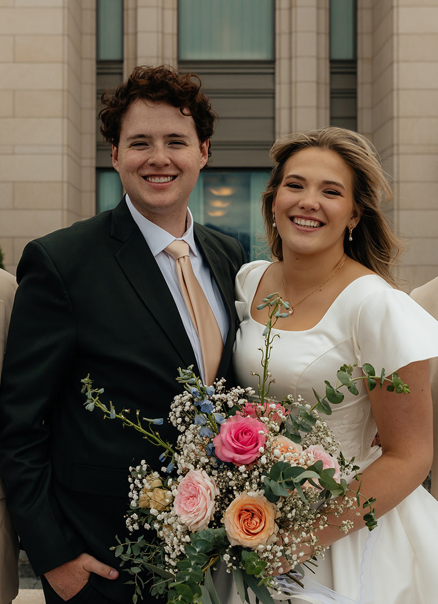

Frigid mountain spring
Crisp clear flowing refreshing
that water fountain
A cool drink of water is just such a treat. And we all have that special water fountain, that one that's just so much colder than the others.
Board games are pretty fun, at least to me they are. Since I was young I played board games with my parents, my dad especially. We'd play Catan, Axis and Allies, Ticket to Ride, whatever. I definitely blame them for my love of board games. My taste has definitely evolved, I'm much more of a complex board game lover nowadays.
I also like to play Pickleball. Again, my parents were the driving force into getting me to play. I blame my grandparents for getting them into it.
Finally, I like a wide variety of video games. I don't play nearly as much as I used to these days. Basically since I've been married, my free time has disappeared.
| Monday | Tuesday | Wednesday | Thursday | Friday | |
|---|---|---|---|---|---|
| 11:00 | CS 2550 | ||||
| 11:30 | |||||
| 12:00 | CS 2370 | ||||
| 12:30 | CS 2420 | ||||
| 1:00 | CS 2600 | ||||